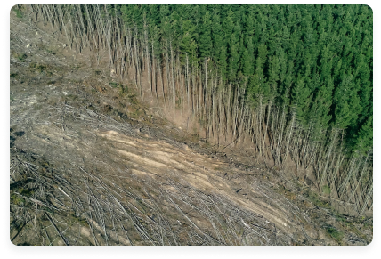

Jenis Kerusakan
25 Mei 2023
Dampak dari kerusakan hutan di Indonesia sangatlah serius dan meluas.
Salah satu dampak utamanya adalah hilangnya habitat bagi berbagai
spesies tumbuhan dan hewan, termasuk spesies yang langka dan terancam
punah. Kehilangan keanekaragaman hayati ini mengancam ekosistem dan
berpotensi menyebabkan gangguan pada rantai makanan serta kerugian besar
terhadap keanekaragaman hayati global. Selain itu, kerusakan hutan juga
menyebabkan kerusakan ekosistem secara keseluruhan. Hilangnya tutupan
vegetasi menyebabkan erosi tanah yang parah, penurunan kualitas tanah,
dan perubahan pola aliran air. Ini berdampak negatif pada pertanian,
menyebabkan penurunan hasil panen dan kerugian ekonomi bagi masyarakat
yang bergantung pada sektor tersebut. Dalam hal perubahan iklim,
kerusakan hutan memiliki kontribusi signifikan terhadap pemanasan
global. Hutan-hutan Indonesia adalah penyerap karbon alami yang penting,
dan kerusakan hutan menghasilkan pelepasan besar-besaran gas rumah kaca
ke atmosfer. Hal ini mempercepat perubahan iklim global, mengakibatkan
kenaikan suhu rata-rata, perubahan pola cuaca yang ekstrem, dan
peningkatan risiko bencana alam seperti banjir dan tanah longsor.
Selain dampak lingkungan, kerusakan hutan juga berdampak pada masyarakat
lokal. Masyarakat yang bergantung pada hutan untuk mata pencaharian dan
sumber daya alam mengalami dampak ekonomi yang serius akibat hilangnya
akses ke sumber daya tersebut. Mereka terpaksa mencari alternatif mata
pencaharian yang mungkin kurang berkelanjutan atau terpinggirkan secara
sosial. Untuk mengurangi dampak kerusakan hutan, langkah-langkah
perlindungan hutan, restorasi ekosistem, dan pengelolaan lahan yang
berkelanjutan perlu diambil secara serius. Hal ini melibatkan penegakan
hukum yang ketat terhadap penebangan hutan ilegal, promosi praktik
pertanian dan perkebunan berkelanjutan, serta edukasi dan kesadaran
masyarakat akan pentingnya menjaga kelestarian hutan. Dengan upaya
kolaboratif antara pemerintah, masyarakat, dan sektor swasta, kita dapat
memperbaiki kondisi hutan Indonesia dan melindungi lingkungan serta
kesejahteraan masyarakat di masa depan.